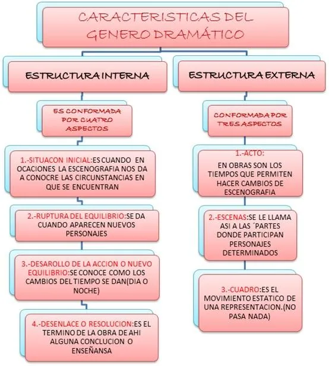

Caracteristicas del teatro dramatico
- Los antiguos griegos llamaban “drama” a toda forma de actuación, independientemente de su contenido. Su equivalente actual sería “teatro”. No debemos confundir este uso del término con lo que hoy en día entendemos por “dramático”, o sea, vinculado a la tragedia y al sufrimiento emocional.
- Representa un conjunto de acciones que forman parte de un relato, pero a diferencia de la narrativa lo hace en un presente inmediato, o sea, hace ocurrir las cosas frente al espectador, y normalmente carece de todo tipo de narradores.
- El género dramático combina el arte literario y el arte escénico, y es considerado uno de los géneros artísticos más potentes de la tradición occidental.

⇠REGRESAR